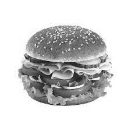

3. Burger

Recipe for making burger
Ingredients:
- 1 pound (450 grams) ground beef (80% lean)
- Salt and freshly ground black pepper, to taste
- 4 hamburger buns
- 4 slices of cheese (optional)
- Lettuce leaves
- Sliced tomatoes
- Sliced onions
- Pickles (optional)
- Ketchup and mustard, or your favorite condiments
- Cooking oil (for grilling or pan-frying)
Steps:
- Start with cold ground beef. If you like, you can season the meat with a little salt and freshly ground black pepper. Be gentle when handling the meat to avoid over-packing it, which can make the burgers tough.
- Divide the ground beef into four equal portions.
- Gently shape each portion into a patty, about 1/2 to 3/4 inch (1.3 to 2 cm) thick.
- Make a slight depression in the center of each patty with your thumb; this will help prevent the burgers from puffing up during cooking.
- Season both sides of each patty with salt and freshly ground black pepper.
- Preheat your grill or a skillet (if you're pan-frying) over medium-high heat. Add a little cooking oil to prevent sticking.
- Place the patties on the grill or in the skillet.
- For medium-rare burgers, cook for about 4-5 minutes on each side.
- For medium burgers, cook for about 5-6 minutes on each side.
- For well-done burgers, cook for about 7-8 minutes on each side.
- If you're adding cheese, place a slice on each patty during the last minute of cooking and cover to melt.
- While the burgers are cooking, split the hamburger buns and toast them lightly on the grill or in a toaster until they're golden brown.
- Place a lettuce leaf on the bottom half of each bun, followed by a burger patty.
- Add slices of tomato and onion on top of the patty.
- Optionally, add pickles for extra flavor.
- Spread ketchup, mustard, or your preferred condiments on the top half of the buns.
- Place the top bun over the toppings to complete the burger.
- Place the top bun over the toppings to complete the burger.